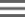

Chamar APIs de machine learning
Visão geral
Neste laboratório, você usará as APIs de machine learning no Datalab.
Conteúdo do laboratório
Neste laboratório, você aprenderá a chamar as APIs de machine learning do Python e a usar os resultados delas.
Introdução
Neste laboratório, você chamará as seguintes APIs de machine learning do Datalab para executar algumas tarefas representativas:
-
a API Vision para detectar texto em uma imagem
-
a API Translate para traduzir o texto detectado para o inglês
-
a API Natural Language para detectar o sentimento por trás de citações famosas
-
a API Speech para transcrever um arquivo de áudio
Configurar
Tarefa 1: inicie o Cloud Datalab
Para iniciar o Cloud Datalab, faça o seguinte:
-
No Cloud Shell, digite o código:
datalab create bdmlvm --zone us-central1-a
O Datalab levará cerca de cinco minutos para inicializar.
Observação: siga as instruções na tela durante esse processo.
Tarefa 2: insira um bloco de dados no Cloud Datalab
Se necessário, espere até que o Datalab inicialize. A ferramenta estará pronta quando aparecer a mensagem "Web Preview".
-
Clique no ícone Visualização da Web no canto superior direito da barra de opções do Cloud Shell. Clique em Alterar porta. Alterne para a porta 8081 na caixa de diálogo Alterar porta de visualização. Em seguida, clique em Alterar e Visualizar..


Observação: a conexão com sua instância do Datalab continuará aberta enquanto o comando estiver ativo. Se o Cloud Shell usado para executar o comando datalab for fechado ou interrompido, a conexão com sua máquina virtual do Cloud Datalab será encerrada. Caso isso aconteça, use o comando datalab connect bdmlvm no seu novo Cloud Shell.
-
No Datalab, clique no ícone Open ungit na barra lateral do canto superior direito.

-
Na janela do Ungit, selecione o texto /content/datalab/notebooks e remova notebooks para que fique apenas /content/datalab. Em seguida, pressione Enter.

-
No painel exibido, digite o seguinte endereço como o repositório do GitHub em Clone from:
https://github.com/GoogleCloudPlatform/training-data-analyst
-
Clique em Clone repository.
Tarefa 3: obtenha uma chave de API
Para obter uma chave de API:
-
No Console do GCP, acesse o menu de navegação (), clique em APIs e serviços e selecione Painel.
-
Na caixa de pesquisa, digite vision para encontrar a Cloud Vision API publicada pelo Google e clique no hiperlink.
-
Clique em Ativada, se necessário.
-
Siga o mesmo processo para ativar a Cloud Translation API, Cloud Speech API e Cloud Natural Language API, todas publicadas pelo Google.
-
No menu do Console do GCP, selecione APIs e serviços e clique em Credenciais.
-
Se você ainda não tiver uma chave de API, clique no botão Criar credenciais e selecione Chave de API. Depois da criação, copie a chave de API e clique em Fechar. Você precisará dessa chave de API no bloco de dados mais tarde.
Tarefa 4: chame APIs de ML do Datalab
-
Volte para o navegador do Datalab e acesse training-data-analyst > CPB100 > lab4c > mlapis.ipynb
-
Leia o comentário, clique em Clear | Clear all Cells e execute os snippets do Python na célula. Pressione Shift+Enter para executar cada trecho do código. Não se esqueça de inserir a chave de API na primeira célula do Python.
Manual atualizado em 10 de Outubro de 2018
Laboratório testado em 10 de Outubro de 2018